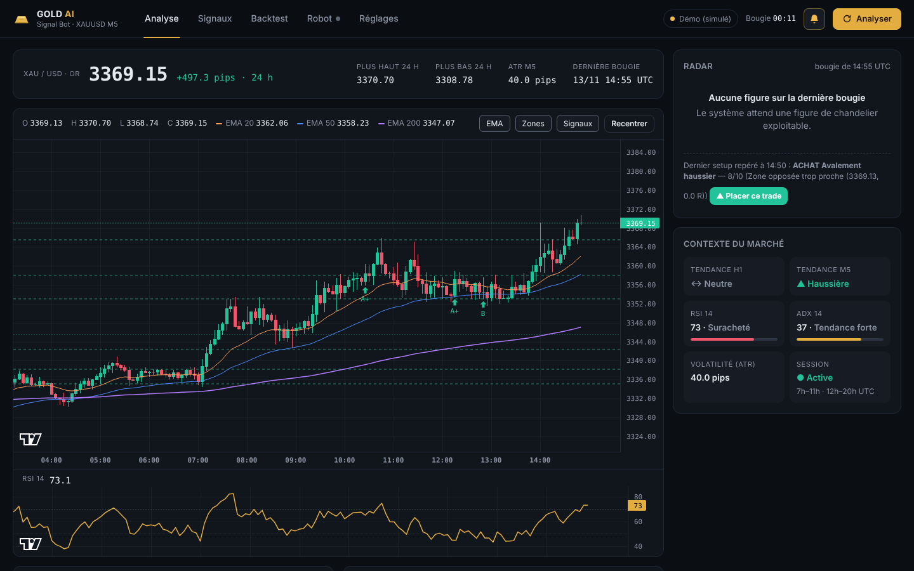
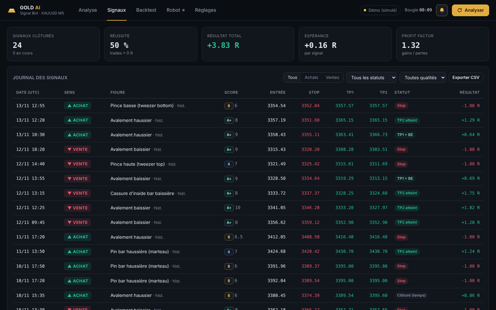
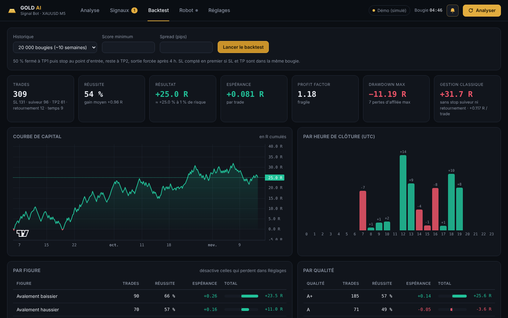
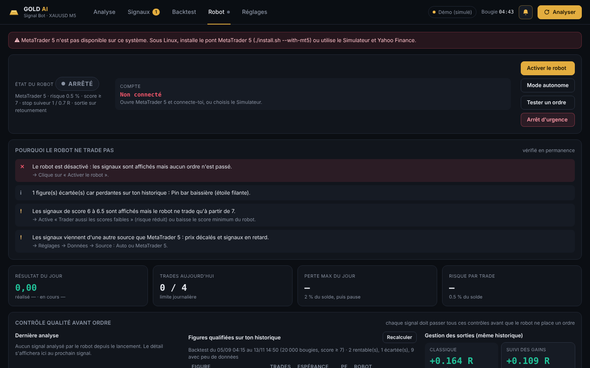

Gold AI Signal Bot surveille l'or (XAUUSD) en unité de temps 5 minutes. À chaque clôture de bougie, il cherche une figure de chandelier japonais, vérifie si le contexte la confirme (tendances M15 / H1 / H4, moyennes mobiles, zones de support et de résistance, RSI, ADX, session) et donne une note sur 10, avec le détail de chaque critère. Si la note est suffisante, il propose une entrée, un stop et deux objectifs.
Il peut aussi placer et gérer les trades lui-même sur MetaTrader 5 (robot, désactivé par défaut).
| Notion | Valeur sur XAUUSD |
|---|---|
| 1 point | 0,01 $ (dernier chiffre du prix chez la plupart des courtiers) |
| 1 pip (utilisé partout dans l'application) | 0,10 $ = 10 points |
| 1 lot | 100 onces : 1 pip vaut 10 $ pour 1 lot, 1 $ pour 0,10 lot, 0,10 $ pour 0,01 lot |
| Volatilité M5 habituelle (ATR) | 30 à 60 pips (3 à 6 $) pendant Londres / New York |
| Stop accepté | 25 à 150 pips (2,50 $ à 15 $) |
| Spread simulé / maximum | 3,3 pips / 6 pips |
| Sessions tradées | 7 h–11 h et 12 h–20 h UTC (= heure d'Abidjan) |
| Annonces surveillées | USD à fort impact (NFP, CPI, Fed, PIB…), ±30 min |
Exemple : compte de 1 000 $, risque 0,5 % = 5 $. Avec un stop de 50 pips (5 $ par once), le lot est 5 $ ÷ (50 × 10 $) = 0,01 lot. Le calcul exact est demandé à MetaTrader 5 et arrondi vers le bas.
Gold-AI-Signal-Bot-Setup-x.y.z.exe sur la page Releases du dépôt GitHub.http://localhost:8010,
la fenêtre noire affiche les notifications. Ne la ferme pas pendant que tu trades.XAUUSD, XAUUSDm, XAUUSD.pro, GOLD…) et le décalage horaire.Les réglages, le journal et l'historique du robot sont dans %LOCALAPPDATA%\Gold AI Signal Bot.
L'application peut tourner en même temps qu'EURUSD M5 Analyzer (port, dossier et numéro magic différents).
GC=F, qui suit l'or au comptant à quelques dollars près. Parfait pour
apprendre à lire l'analyse, pas pour placer des ordres à ces niveaux.| Critère | Points |
|---|---|
| Force de la figure (+1 si plusieurs figures concordent) | 1 à 3 |
| Sens de la tendance H1 | +2 (−2 si contre) |
| EMA 20/50 alignées · bon côté de l'EMA 200 | +1 · +0,5 |
| Rejet d'une zone S/R (forte si ≥ 2 touches) ou rebond sur les EMA | +1 à +2 |
| RSI qui confirme sans excès | +1 (−1 si excès) |
| ADX ≥ 18 (marché directionnel) | +1 (−1 sinon) |
| Session Londres / New York | +0,5 |
Qualité : A+ ≥ 8 · A ≥ 7 · B ≥ 6. Stop derrière la mèche + 0,25 ATR, TP1 = 1,5 R, TP2 = 2,5 R ramené avant la zone opposée ; setup refusé si une zone bloque à moins de 1,2 R.


Lance le backtest sur 50 000 bougies MetaTrader 5 (environ 6 mois). Regarde surtout l'espérance par trade (au-dessus de +0,05 R après spread), le profit factor (au-dessus de 1,1), le drawdown et les résultats par figure et par heure : désactive dans Réglages les figures qui perdent.

À chaque signal validé (score ≥ 7 par défaut), le robot calcule le lot selon le risque, ouvre deux positions (TP1 et TP2), met le stop de la deuxième au prix d'entrée après TP1, suit les gains avec un stop suiveur, coupe au retournement et ferme ce qui reste après 4 h.
Désactivé au lancement · démo uniquement sauf autorisation · pause après −2 % dans la journée · 4 trades par jour et 1 ouvert à la fois · spread et écart de prix maximums · lot plafonné · arrêt d'urgence qui ne ferme que ses positions (numéro magic 730526) · mode Simulateur sans argent.
Débutant (0,25 %, 3 trades/jour), Équilibré (défaut), Actif (scores faibles à risque réduit), Tous les signaux (dès le score 4, sans filtres statistiques ni IA ; annonces, spread et perte du jour restent actifs).
Le fichier Gold_AI_Signal_Bot_EA.ex5 (dans la Release) applique la même analyse et la même gestion
directement dans MetaTrader 5, sans Python : sur ton PC ou un VPS MetaTrader 24 h/24.
MQL5\Experts : copie le fichier .ex5.Avec InpAutoTrade = false, l'EA affiche des boutons PLACER / IGNORER et notifie le téléphone.
| Problème | Solution |
|---|---|
| « Aucune donnée MT5 pour XAUUSD » | Le nom ne correspond pas à ton courtier. Recopie-le depuis Observation du marché dans Réglages → Données (ex. XAUUSDm, GOLD). |
| Heures des bougies décalées | Règle le décalage horaire du serveur (souvent 2 en hiver, 3 en été) ou relance l'assistant pendant que le marché est ouvert. |
| Le robot ne trade pas | Lis l'encadré « Pourquoi le robot ne trade pas » de l'onglet Robot ; utilise « Tester un ordre » sur un compte démo. |
| « spread trop élevé » | Normal à l'ouverture asiatique et autour des annonces. Ne monte pas le maximum au-delà de 8–10 pips. |
| La page ne s'ouvre pas | Ouvre http://localhost:8010 à la main ; vérifie que la fenêtre noire est ouverte. |
| Tout vérifier | Réglages → État du système : chaque point indique quoi corriger. |